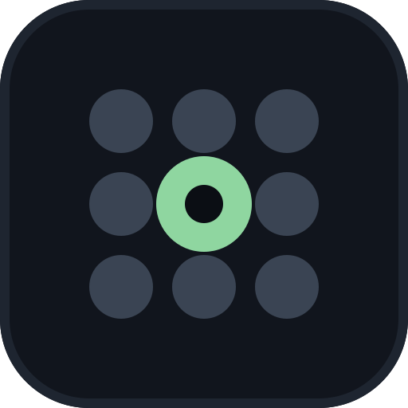
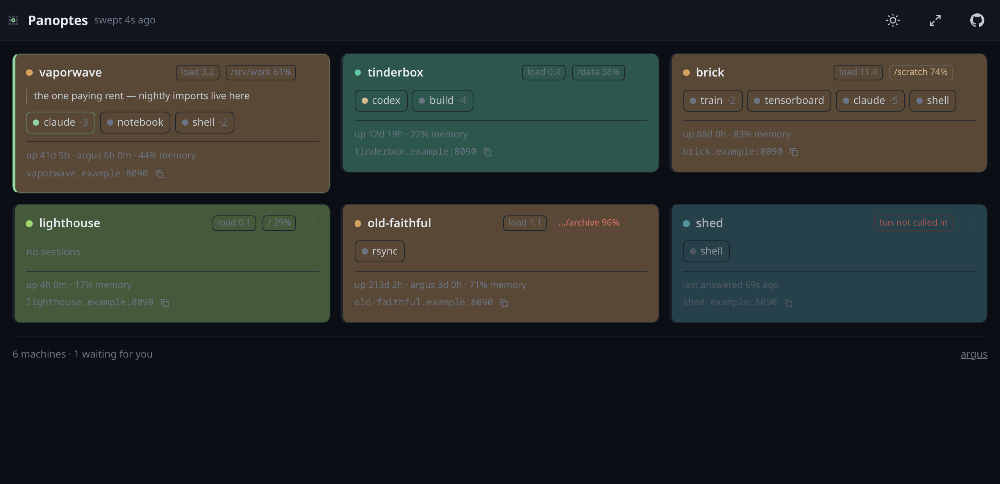
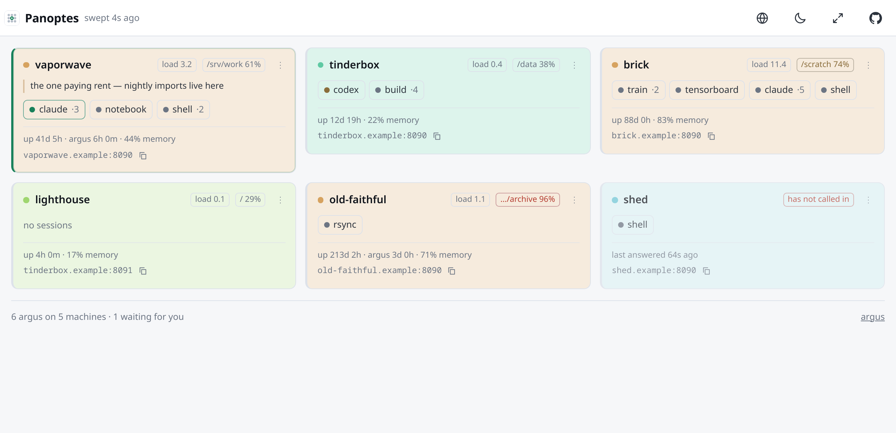
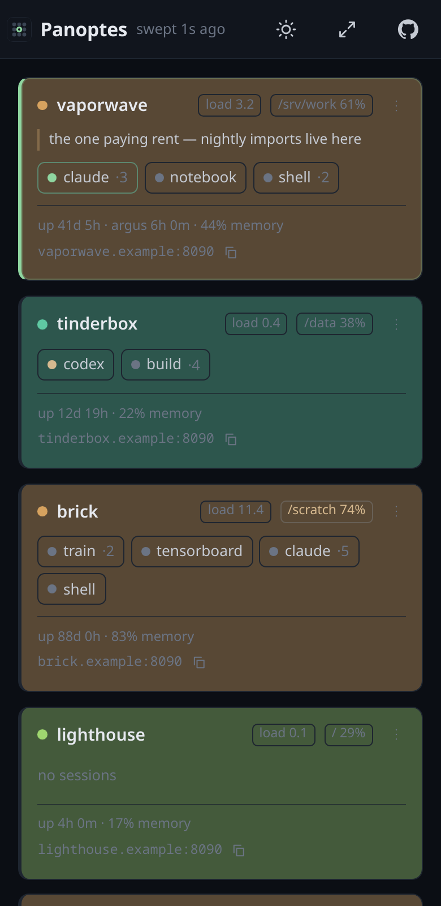

Which machine needs me?
One tile per machine: which are up, what is running on each, and which one is waiting for you — sorted to the top, in the only colour on the board that means something. Click a session name and you are in that terminal, on that machine. It is the board over your Argus instances.
curl -fsSL https://raw.githubusercontent.com/andreaderuvo/panoptes/master/install.sh | bash
panoptes # prints a URL with a token in it
MIT · Python + vanilla JS · no build step · no database · self-hosted

1 2 3 44 argus on 2 machines, when three of them are on one box.This is a page that reads six numbers off each machine, and it is built so that losing it costs you a list of session names.
A watcher token opens GET /api/overview on that machine's
Argus and nothing else: no shell, no files, no writes, no proxy.
The board holds them; the page never sees one. Clicking through to a machine opens that machine's own Argus, in its own origin, with its own token.
Panoptes has no filesystem view, no terminal and no way to run a command it was not told about by name — see below.
The board asks (pull). Write the machine down and it gets polled. Better wherever it works: a request that fails is the signal that a machine is down, and one file says what is being watched.
# ~/.config/panoptes/config.yaml
machines:
- name: hetzner
url: http://hetzner.internal:8090
token: <a watcher token from that machine's Argus>
The machine calls in (push). Some networks only go one way — two boxes on the same wire, each with the other's MAC in its ARP table, and one refusing everything inbound. No configuration on the board fixes that, so the machine opens the connection instead, in the direction that already works.
# argus config, on the machine that cannot be reached report_to: url: http://board.internal:8070 token: <the registration token> name: gpu2 every: 10
Nothing invented here: it is what Prometheus does in agent mode, and what every dial-out agent does — Tailscale, Cloudflare Tunnel, Teleport, the kubelet registering with its API server. Local pull, remote push.
The ⋯ on a tile can start and stop things on that machine, and stop its Argus. No command ever arrives in a request: each machine publishes named things in its own config, and the board may ask for one of those names and nothing else. That is the whole design, and it is what keeps a shared key harmless.
# argus config, on the machine
runnable:
- name: nightly
run: python3 nightly.py
watchers:
- name: panoptes
token: …
may_run: true # otherwise the token stays read-only
may_stop_argus: false # the one thing this board cannot undo
An ordinary board shows nothing in that section, which is correct: pressing these has to be granted on the machine, not assumed by the page. Stopping an Argus asks twice and says what it costs — every tmux session keeps running, but nothing here can start it again; that takes a shell on that machine.

Light or dark, following the device, and switchable.

On a phone it is one column, and it installs as an app where the certificate allows it.
Taken from the name, so it is the same on every device you open the board from — and overridable, with the tint strength in your hands.
A note per machine, written with the pencil on the tile: what the box is for, what it was doing. Everything else on a tile, the machine said. This is the part only you know.
Who pressed stop, who tried to get in, and who invented a machine — with the address it came from. The board is the only thing that knows which browser a click came from.
curl -fsSL https://raw.githubusercontent.com/andreaderuvo/panoptes/master/install.sh | bash panoptes # prints a URL with a token in it panoptes --qr # and a code to photograph
No sudo, nothing outside your home, and the same line again updates it. Or a
container — and here a container is not a compromise but the right shape, since a board has
no tmux, no filesystem and no terminal to reach into, so it needs no host namespaces and
works anywhere Docker does, Windows included:
git clone https://github.com/andreaderuvo/panoptes && cd panoptes docker compose up -d
Or git clone and pip install -r requirements.txt, as before. All
three are checked on every change, on Linux and macOS.
That is the board. Then tell it about your machines, or tell your machines about it — both directions work, and which one you want depends on your network. The README has both, with the exact configuration on each side.
Yes — Panoptes reads each machine's Argus and links back into it. It is the second half of the same idea: Argus is one machine in a browser tab, this is every machine on one page.
Per machine: a name, a URL, a read-only watcher token, an optional colour and your own note. Per sweep: hostname, uptime, load, memory, the fullest disk and the session names with which of them is ringing. No file, no path, no command.
The machines that announced themselves are still there. They used to be forgotten, which meant a machine you had stopped did not go red — it vanished, and for the one question this exists to answer that is the worst possible answer. Forgetting one is now something you do on purpose.
It works, and the journal is why it is worth mentioning: the machine records that "panoptes" pressed stop, which is true and not enough. The board is the only thing that knows which browser the click came from.
Python on the server, vanilla JavaScript in the browser. No build step, no bundler, no database — a file for the config, one for the machines that announced themselves and one for the journal.